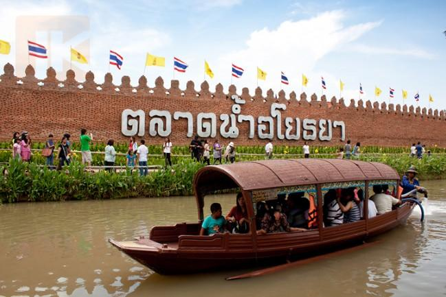

2.ตลาดน้ำอโยธยา
ตลาดน้ำอโยธยา มีพื้นที่ประมาณกว่า 80 ไร่ นับเป็นสถานที่ท่องเที่ยวเชิงอนุรักษ์วัฒนธรรมไทย ก่อตั้งขึ้นมาก็ทำให้ที่นี่กลายมาเป็นสถานที่ท่องเที่ยวใจกลางเมือง โดยจะเน้นสะท้อนวิถีชีวิตความเป็นอยู่แบบไทยในสมัยกรุงศรีอยุธยา ไม่ว่าจะเป็น ด้านการแต่งกาย การแสดงพื้นบ้าน การละเล่น ของกินของใช้ต่างๆ รวมไปถึงขนบธรรมเนียมประเพณี และสถาปัตยกรรมที่คงความงดงามเป็นเอกลักษณ์ของจังหวัดพระนครศรีอยุธยา โดยเราจะได้เพลิดเพลินไปกับบรรยากาศแบบไทยๆ เดินเที่ยวชมตลาด ชิมช้อปอาหารอร่อยๆ รวมถึงมีร้านขายของฝากมากมายให้เราได้หิ้วกลับไปฝากคนที่บ้านอีกด้วยค่ะ โดยพื้นที่ส่วนใหญ่ของ ตลาดน้ำอโยธยา นั้น จะมีน้ำจะอยู่กึ่งกลางและล้อมรอบด้วยพื้นที่ออกแบ่งเป็น 16 โซน โดยตั้งชื่อตามอำเภอต่างๆ ของอยุธยา ภายในจะมีร้านค้ามากกว่า 249 ร้าน มีทั้งเป็นแบบเรือสินค้าขายอาหารกว่า 50 ลำ ตลาดนัดชุมชนวิถีไทยกว่า 40 ร้าน และร้านค้าบริเวณเรือนไทยอีก 159 ร้าน รวมถึงสินค้าจากลุ่มชาวบ้าน หรือ สินค้า OTOP ต่างๆ มากมายหลากหลายชนิดให้เลือกช้อปกันอีกเยอะแยะ